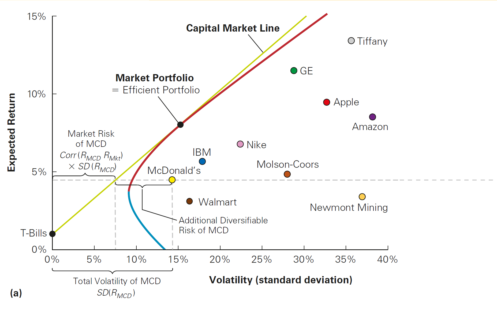

Estimating the Cost of Capital
Lucas S. Macoris
Outline
This lecture is mainly based the following textbooks:
Study review and practice: I strongly recommend using Prof. Henrique Castro (FGV-EAESP) materials. Below you can find the links to the corresponding exercises related to this lecture:
\(\rightarrow\) For coding replications, whenever applicable, please follow this page or hover on the specific slides with coding chunks.
The Capital Asset Pricing Model
From our last lecture, you saw that…
Determining how much to expect an asset to reward investors is tied to portfolio choices
The required return is the expected return that is necessary to compensate for the risk investment \(i\) will contribute to the portfolio:
\[ \small E[R_i] > R_f + \beta_i^P \times (E[R_p] - R_f) \]
- It is is equal to the risk-free interest rate…
- …plus the risk premium of the current portfolio, P…
- … scaled by \(i\)’s sensitivity to \(P\), denoted by \(\beta_i^P\)
- In such a way, this enables us to “price” the required returns for investing in any asset based on the amount of required returns that are needed to improve the performance of an efficient portfolio!
Putting it into practice
Once we can identify the efficient portfolio, we can compute the expected return of any security based on its beta with the efficient portfolio according to the equation just shown
However, we face a practical issue: in order to identify the efficient portfolio we must know the expected returns (\(E[\cdot]\)), volatilities (\(\sigma\)), and correlations between all securities
To answer this question, we’ll look at the Capital Asset Pricing Model - also known as CAPM:
- It allows us to identify the efficient portfolio of risky assets without having any knowledge of the expected return of each security
- Instead of that, the CAPM makes some identifying assumptions regarding the investor behavior
About the CAPM
As we’ll see throughout the lecture, CAPM is very practical and straightforward to implement, and the the CAPM-based approach is very robust
It imposes a disciplined process on managers to identify the cost of capital
It makes the capital budgeting process less subject to managerial manipulation than if managers could set project costs of capital (i.e., the opportunity cost for the firm’s equity) without clear justification
It is often the model many investors use to evaluate risk
All in all, it gets managers to think about risk in the correct way: instead of thinking about total risk, the CAPM shows us that we only the market risk (non-diversifiable) should be the concern
The CAPM Assumptions
There are basically three simplifying assumptions around investor behavior that the CAPM establishes:
Investors can buy and sell all securities at competitive market prices without incurring taxes or transactions costs can borrow and lend at the risk-free interest rate
Investors hold only efficient portfolios of traded securities.
Investors have homogeneous expectations regarding the volatilities, correlations, and expected returns of securities. There is no information asymmetry.
With these assumptions, we are able to identify the efficient portfolio without having knowledge of the expected returns, volatilities, and correlations between all available investments
The CAPM Assumptions
There are basically three simplifying assumptions around investor behavior that the CAPM establishes:
Investors can buy and sell all securities at competitive market prices without incurring taxes or transactions costs can borrow and lend at the risk-free interest rate
Investors hold only efficient portfolios of traded securities.
Investors have homogeneous expectations regarding the volatilities, correlations, and expected returns of securities. There is no information asymmetry.
With these assumptions, we are able to identify the efficient portfolio without having knowledge of the expected returns, volatilities, and correlations between all available investments
The CAPM Assumptions
Assumption I
Investors can buy and sell all securities at competitive market prices (without incurring taxes or transactions costs) and can borrow and lend at the risk-free interest rate
- This assumption states that there are no market imperfections that would prevent investors adjust their portfolios according to their needs
- All investors have access to the same set of securities (i.e there is no such investment that is only for accredited investors)
- All investors are able to buy and sell securities at the same conditions
- Finally, they’re all able to access a risk-free investment, \(R_f\), both for investment and lending
- This guarantees that if a given investor is not holding an optimized portfolio anymore, he/she can adjust his/her holdings so as to hold the optimized portfolio again
The CAPM Assumptions, continued
Assumption II
Investors hold only efficient portfolios of traded securities—portfolios that yield the maximum expected return for a given level of volatility. All in all, for a given level of volatility assumed, an investor will always select the portfolio with the highest risk \(\times\) return relationship
This assumption states that all investors behave so as to choose the portfolio with the highest return for a given level of risk that they are willing to accept
As we saw, investors will seek to choose a given portfolio \(P\) such that has the highest Sharpe Ratio - which we called the tangent portfolio
Although risk preferences may change, investors will seek to combine a risky portfolio \(P\) with the risk-free rate so as to adjust for their preferences:
- Investors that have preferences towards risk will weight in more on the tangent portfolio and less on the risk-free asset
- On the other hand, investors that are risk-adverse will weight in more on the risk-free asset
The CAPM Assumptions, continued
Assumption III
Investors have homogeneous expectations regarding the volatilities, correlations, and expected returns of securities.
Plausibly, there are many investors in the world, and each may have his or her own estimates of the volatilities, correlations, and expected returns of the available securities…
But investors don’t come up with these estimates arbitrarily:
- They base them on historical patterns and other information (including market prices)
- If all investors use publicly available information sources, then their estimates are likely to be similar
\(\rightarrow\) As a consequence, it is not unreasonable to consider a special case in which all investors have the same estimates concerning future investments and returns
Wrapping up the assumptions
Think about your simplifying assumptions now…
- If investors have homogeneous expectations (Assumption #3), they will identify the same efficient portfolio (the one with the highest Sharpe Ratio)
- We know that all investors will invest in the efficient portfolio of risky assets (Assumption #2)
- Finally, as they can borrow and lend at the same rate \(R_f\) (Assumption #1), they can adjust the risk according to their preferences
If these are valid, under the CAPM assumptions, we can identify the efficient portfolio: it is equal to the market portfolio!
A Market Portfolio contains all traded securities in a economy according to their shares relative to the total!
The Capital Market Line
When the CAPM assumptions hold, the market portfolio is the efficient portfolio, so the tangent portfolio that we discussed before is actually the market portfolio
The tangent line goes that through the market portfolio is called the Capital Market Line (CML):
- It contains all possible choices of portfolios that investors would pick
- According to the CAPM, these portfolios will always be a combination of the risk-free rate, \(R_f\), and the market portfolio
Therefore, investors should always choose a portfolio on the Capital Market Line, by holding some combination of the risk-free security and the market portfolio
The Capital Market Line

Pricing the Risk Premium under the CAPM
We can now identify the efficient portfolio: it is equal to the market portfolio
What does that mean for us in terms of determining expected equity returns? Recall that, from our previous class, the required return for a given stock \(i\) should be:
\[ \small E[R_i] > R_f + \beta_i^P \times (E[R_p] - R_f) \]
- Until now, we were agnostic on what \(P\) was. Under the CAPM, we can change \(R_p\) to \(R_m\) (which is the return of the market portfolio):
\[ \small E[R_i] = R_f + \beta_i^M \times (E[R_m] - R_f) \]
- Consequently, the \(\beta\) of a security measures its volatility due to market risk relative to the market as a whole, and thus captures the security’s sensitivity to market risk
Pricing the Risk Premium under the CAPM, continued
- The CAPM implies that there is a linear relationship between a stock’s sensitivity to the market (\(\beta\)) and its expected return:
\[ \small E[R_i] = \underbrace{R_f + \beta_i^M \times (E[R_m] - R_f)}_{\text{This is a 1st order equation: }a+bx} \]
This relationship has also a name: the Security Market Line (SML). It is the line along which all individual securities should lie when plotted according to their expected return and \(\beta\)
- Contrast this result with the Capital Market Line shown before, where there is no clear relationship between an individual stock’s volatility and its expected return
- Due to the linear nature between the expected return and \(\beta\), a stock’s expected return is due only to the fraction of its volatility that is common with the market
\(\rightarrow\) Therefore, the distance of each stock to the right of the capital market line must be due to its diversifiable risk!
Capital Market Line shows no clear relationship between risk and return…

The Security Market Line makes the relationship clear when focusing only on the sensitivy to the market risk (\(\beta\))!

Beta of a portfolio
Because the security market line applies to all tradable investment opportunities, we can apply it to portfolios as well
How can we find the \(\beta\) of a full portfolio of assets? In order to see that, assume that you have several assets \(i\) in portfolio \(P\)
Thus, the return of the portfolio can be writen as \(R_p=\sum_{i}x_i R_i\), where \(x_i\) is the weight of each asset \(i\) in the portfolio
The \(\beta\) of this “asset” is then:
\[ \small \beta_{p}=\dfrac{Cov(R_p,R_m)}{\sigma^2_m}=\dfrac{Cov(\sum_{i}x_i R_i,R_m)}{\sigma^2_m}=\sum_i x_i\dfrac{Cov(R_i,R_m)}{\sigma^2_m}=\sum_i x_i\times \beta_i \] \(\rightarrow\) Therefore, the \(\beta\) of a portfolio is simply the weighted average of the indidivual betas!
Estimating the Equity Cost of Capital
Estimating the Equity Cost of Capital
Based on the CAPM model we’ve just seen, the cost of capital of any investment opportunity equals the expected return of the available investments with the same beta (those that are along the Capital Market Line):
You can know use this rationale to estimate how much an investor should need to earn in order to invest in a given stock \(i\):
\[R_i = R_f + \beta \times (E[R_m] - R_f)\]
- In what follows, we’ll see how this can be used in practce
Estimating the Equity Cost of Capital, example
- Suppose you estimate that Disney (ticker: DIS) has a volatility of 20% and a \(\beta\) of 1.29. A similar process for Chipotle (ticker: CMG) yields a volatility of 30% and a \(\beta\) of 0.55. If the risk-free interest rate is 3% and you estimate the market’s expected return to be 8%, calculate the equity cost of capital for DIS and CMG.
\[R_{DIS}=3\%+1.29 \times (8\%−3\%) = 3\% + 6.45\% =9.45\%\]
\[R_{GMG}=3\%+0.55 \times(8\%−3\%)=3\%+2.75\%=5.75\%\]
\(\rightarrow\) Because market risk cannot be diversified, it is the market risk that determines the cost of capital. Therefore, DIS has a higher cost of equity capital than CMG, even though it is less volatile
Estimating the Equity Cost of Capital in practice
Ok, now you now the dynamics behind the pricing of securities under the CAPM
However, no one really told you from where the numbers came from
Recall that, under the CAPM, we need to have estimates related to the market portfolio:
- It is is equal to the risk-free interest rate, \(R_f\)…
- The expected return on the market portfolio, \(E[R_m]\)…
- And a stock’s s sensitivity to the market portfolio, denoted by \(\beta\)
We will proceed by understanding each of these components and how to get estimates for them
First step: defining the Market Portfolio
First and foremost, what is the definition of a market portfolio? It is the total supply of securities, with the proportions of each security corresponding to the proportion of the total market that each security represents
Thus, the market portfolio contains more of the largest stocks and less of the smallest stocks. In order to see that, note that the market capitalization of one firm is simply the total market value of a firm’s outstanding shares:
\[\small MV_i = \text{# of shares outstanding} \times \text{Price per share} = N_i \times P_i\]
- We then calculate the portfolio weights of each security (a “Value-Weighted” Portfolio): a portfolio in which each security is held in proportion to its market capitalization:
\[\small x_i = \frac{MV_i}{Total\; MV}= \frac{MV_i}{\sum{MV}}\]
The Market Portfolio and its proxies
- If we were to look at real capital markets, there are a couple of portfolios (which are generally called indexes that aim to mimick the dynamics of a market portfolio. Examples of market portfolios indexes include:
- S&P500: A value-weighted portfolio of the 500 largest U.S. stocks
- Dow Jones Industrial Average (DJIA): a price-weighted portfolio of 30 large industrial stocks (holds an equal number of shares of each stock).
- Ibovespa: around 90 BR stocks following an algorithm that focuses on liquidity
Caution: indexes like the S&P500 and Ibovespa are not considered the market portfolio, but rather, they are proxies for the market portfolios - in other words, they are reasonable approximations of the market portfolio for a given set universe of securities
#1 Cost of Equity Components: the risk-free rate
The first ingredient of CAPM is risk-free rate, which is the interest rate that investors can earn while having zero to limited volatility
Suggestions on how to pick the Risk-Free (\(R_f\)) rate to be used:
- The yield on U.S. Treasury securities
- Surveys suggest most practitioners use 10- to 30-year treasuries
- Highest quality assets
Often, we use a short-term risk-free rate to evaluate a short-term investment, and a long-term rate when evaluating a long-term investment
#2 Cost of Equity Components: the market risk premium
Another component of the Cost of Equity is the difference between \(E[R_m]\) and \(R_f\) (the market risk premium)
Ways to estimate the market risk premium:
- Estimate the risk premium (\(E[R_m] − R_f\)) using the historical average excess return of the market over the risk-free interest rate
- Notice that, even with long periods, we often have large standard errors
- Implicitly, you are assuming that the past is a good proxy for the future

Note: criticism around using historical data
When estimating the Cost of Equity, using historical data has two problems:
- Standard errors of the estimates are often large
- They are backward looking, meaning that they reflect past, and not future, information. Therefore, we cannot be sure they are representative of current expectations
An alternative is to use a “discount rate” that is consistent with the current level of the market index in consideration: assume that, for a given firm \(i\), current prices can be modeled as future dividends (Gordon model). If that is true, then we have that:
\[ P_i=\dfrac{D_1}{r-g}\rightarrow r = \dfrac{D_1}{P_i}+g\equiv \text{Dividend Yield}+ \text{Growth rate on Dividends} \]
Note: Criticism around using historical data, example
- Let’s say that, after aggregating all firms, Ibovespa’s current dividend yield is 2%. Also, both earnings and dividends per share are expected to grow 6% per year. If that is true, then the discount rate that would make sense to justify the actual level of the Ibovespa index is the discount rate, \(r\):
\[ R_m = \text{Dividend yield} + \text{Growth Rate on Dividends}= 2\% + 6\% = 8\% \]
While this model is highly inaccurate for an individual firm, the assumption of constant expected growth is more reasonable when considering the overall market
Following such methods, researchers generally report estimates in the 3%–5% range for the future equity risk premium
#3 Cost of Equity Components: \(\beta\) estimation
As of now, you were able to get a sense on how to get reasonable estimates for \(R_f\) and the Market Risk Premium, \(E[R_m]-R_f\)
All that is left is to estimate the stocks’s sensitivity to the returns of the market portfolio, \(\beta\). Recall that, a new asset \(i\) should be enhance the performance of a portfolio if:
\[ \small \underbrace{\frac{E[R_i] - R_f}{\sigma_{i} \times Corr(R_i,R_m)}}_{\text{Sharpe Ratio of } i} > \underbrace{\frac{E[R_m] - R_f}{\sigma_{m}}}_{\text{Sharpe Ratio of Market}} \]
- With that, we saw that the expected return from an asset \(i\) should be:
\[ \small R_i - R_f = \underbrace{\frac{\sigma_{i} \times corr(R_i,R_m)}{\sigma_{m}}}_{\beta^M_i} \times (E[R_m] - R_f) \]
#3 Cost of Equity Components: \(\beta\) estimation, continued
- Because \(\small Corr(R_i,R_m)=\frac{Cov(R_i,R_m)}{\sigma_i\sigma_m}\), we have that:
\[ \small (R_i - R_f)=\frac{\sigma_{i} \times Cov(R_i,R_m)}{\sigma_i \sigma_m\sigma_{m}} \times (E[R_p] - R_f)\rightarrow (R_i - R_f)= \underbrace{\frac{Cov(R_i,R_m)}{\sigma^2_m}}_{\text{OLS formula for slope}}\times (E[R_p] - R_f) \]
- We can then estimate \(\beta\) using an Ordinary Least Squares regression:
\[ \small (R_i - R_f) = \alpha_i + \beta_i \times (R_m - R_f) + \epsilon_i \]
- \(\epsilon_i\) is the error term (or the residual). It represents the deviations from the best-fitting line and is, by definition, zero on average (or else we could improve the fit), and represent firm-specific risk that is diversifiable and that averages out in a large portfolio
Example: looking at PETR3.SA (\(\beta\) = 1.02)
Understanding the \(\alpha\) term inside the OLS estimation
- Recall that our OLS specification was:
\[ \small (R_i - R_f) = \alpha_i + \beta_i \times (R_m - R_f) + \epsilon_i \]
\(\alpha_i\) is the constant term. It measures the historical performance of the security relative to the expected return predicted by the security market line
It is the distance that the stock’s average return is above or below the SML. Thus, we can say \(\alpha_i\) is a risk-adjusted measure of the stock’s historical performance.
According to the CAPM, \(\alpha_i\) should not be significantly different from zero
- If \(\alpha>0\) constistently, it would mean that a security delivers a constant positive return and, by definition, independent from the market returns
- If that is the case, investors would buy the security up to a point where price adjusts so that \(\alpha\) goes to zero (recall Assumption #1)!
Beta Estimation, practice
- Assuming that the market volatility, \(\sigma_m\), is 10%, estimate the \(\beta\) for each of these three securities:
| Portfolio | Weight | Volatility (\(\sigma\)) | Correlation with M |
|---|---|---|---|
| HEC Corp | 0.21 | 13% | 0.42 |
| Green Midget | 0.31 | 20% | 0.68 |
| Alive And Well | 0.48 | 12% | 0.54 |
- \(\beta_{H} = \frac{Sd(R_i) \times Corr(R_i,R_m)}{Sd(R_m)} = \frac{0.13 \times 0.42}{0.10} = \small 0.546\)
- \(\beta_{G} = \frac{Sd(R_i) \times Corr(R_i,R_m)}{Sd(R_m)} = \frac{0.20 \times 0.68}{0.10} = \small 1.36\)
- \(\beta_{A} = \frac{Sd(R_i) \times Corr(R_i,R_m)}{Sd(R_m)} = \frac{0.12 \times 0.54}{0.10} = \small 0.648\)
Beta Estimation, practice
- Suppose you have estimated Tikyberd’s beta to be 0.8 with a 95% confidence interval of 0.65 to 0.95. Assuming the risk-free rate is 2% and the market is expected to return 12%, what range would you estimate for Tikyberd’s equity cost of capital?
\[E[R_i]=r_f + β_i (E[R_M] −R_f) =2\% + 0.65 (12\% − 2\%) = 8.5\%\]
\[E[R_i]=r_f + β_i (E[R_M] −R_f) = 2\% + 0.95 (12\% − 2\%) = 11.5\%\]
\(\rightarrow\) Therefore, the range for the expected returns from Tikyberd is \([8.5\%,11.5\%]\)
Estimating the Debt Cost of Capital
The Debt Cost of Capital
In the previous slides, we saw how to use the CAPM to estimate the cost of capital of a firm’s equity
What about a firm’s debt — in other words, how to estimate the expected return required by a firm’s creditors?
In what follows, we’ll see some approaches for estimating the Debt Cost of Capital. Recall that the Cost of Capital of a given firm will then be a weighted average of the Equity and Debt costs
We’ll look at two different methods:
- Using Debt Yields
- Using the CAPM to generate debt betas
Approach #1: Debt Yields
- Recall that the Yield to Maturity (YTM) is the IRR an investor will earn from holding the bond to maturity and receiving its promised payments
- If there is little risk the firm will default, yield to maturity is a reasonable estimate of investors’ expected rate of return
- On the other hand, if there is significant risk of default, yield to maturity will overstate investors’ expected return
Approach #1: Debt Yields, continued
- How can we adjust for potential losses due to defaults? We can estimate the expected returns from debt, \(r_d\), as:
\[ \small r_d=\text{YTM} - \text{Prob. of Default}\times \text{Expected Loss given Default} \]
In order to see that, assume that the average loss rate for unsecured debt is 60%
During average times, the annual default rate for B-rated bonds is 5.5%.
In this case, the expected return to B-rated bondholders during average times is \(\small 0.055 \times 0.60 = 3.3\%\) below the bond’s quoted yield:
Approach #2: Debt Betas
We can also use the CAPM to estimate debt cost through identifying the sensitivity of a given firm’s debt returns to the market returns
- Debt betas are difficult to estimate because corporate bonds are traded infrequently, so there’s little variation in bond returns
- One approximation is to use estimates of betas of bond indices by rating category

Debt Betas, practice
- In early 2013, auto parts retailer Autozone had outstanding 10-year bonds with a Yield-to-Maturity of 3% and a BBB rating. If corresponding risk-free rates were 1.5% and the market risk premium is 8%, estimate the expected return of Autozone’s debt.
Approach #1: using the average estimates in Table and an expected loss rate of 60%, we have:
\[ \small r_d = 3\% - 0.5\% \times 0.6 = 2.7\% \]
Approach #2: alternatively, we can estimate the bond’s expected return using CAPM and an estimated beta of 0.10:
\[ \small r_d = 1.5\% + 0.10(8\%) = 2.3\% \]
\(\rightarrow\) Both estimates are rough approximations and they both suggest that the expected return of Autozone’s debt is below its yield-to-maturity of 3%
Estimating a Project’s Cost of Capital
A Project’s Cost of Capital
When we started studying the CAPM, the focus was to price the required returns of a company as a whole by means of the sensitivity of its returns with the market
What about investment opportunities within a firm (or, alternatively, that are not publicly traded)? Because a new project is not itself a publicly traded security, we cannot use historical risks of equity and debt to estimate beta and the cost of capital
Furthermore, the decision to invest in specific projects using the firm’s cost of capital might ignore the project’s risk:
- If, for example, a company has an overall \(\beta\) of 0.75, it is, on average, less sensitive to changes in market returns
- However, this company can operate in multiple industries at the same time - e.g, Ultrapar - Grupo Ultra
- Finally, there may be some specific projects, such as Research and Development (R&D), that are likely riskier than the average risk of a project within the company
Estimating a project’s Cost of Capital
Whenever we are evaluating a new project, the ultimate decision is assert whether or not to undertake a project:
- If the expected return is higher than the opportunity cost for investing in that project, we should undertake the project
- If the expected return is lower than the opportunity cost for investing in that project, we should reject the project
How can we do this as the cost of capital that is required to make this decision is specific to a project, which does not have historical data available?
There are several ways in which we can use information to estimate such return
These methods range in the complexity in which we assume the project to have, as well as the source of funds that are used to fund the project
Approach #1: All-Equity Comparables
The simplest setting of a theoretical comparable firm is to find an all-equity financed firm (a firm with no debt) in a single line of business that is comparable to the project
Remember that:
- Assets = Equity + Debt
- When debt is zero: Assets = Equity.
Based on the information from this firm, use the comparable firm’s equity \(\beta\) and cost of capital as estimates to estimate the project’s cost of capital
- The rationale here is that your project is an asset by itself. If you find an all-equity firm, the equity \(\beta\) will also be the beta of its assets
- Consequently, you can use this estimate as the \(\beta\) estimate of your project
A Project’s Cost of Capital, practice
- You have just invented a new low-cost, long-lasting rechargeable battery for use in electric cars. You are working on your business plan, and believe your firm will face similar market risk to Seguin Inc, which has a \(\beta\) of 1.3. To develop your financial plan, estimate the cost of capital of financing your firm assuming a risk-free rate of 2.5% and a market risk premium of 6.5%.
- Using Seguin’s beta as the estimate of the project beta (i.e., assuming the market risk of your project is the same as this company’s):
\[ r_{\text{Project}} = 2.5\% + 1.3 \times 6.5\% = 10.95\% \]
Introducing Leverage
What if the firm that we have used as a comparable peer is not 100% Equity? As a result, the situation is a bit more complicated if the comparable firm has debt
In that case, the cash flows generated by the firm’s assets are used to pay both debt and equity holders
Consequently, the returns of the firm’s equity (which are being measured using the \(\beta\) from its equity returns) alone are not representative of the underlying assets risk!
- In fact, because of the firm’s leverage, the equity will often be much riskier
- Thus, the beta of a levered firm’s equity will not be a good estimate of the beta of its assets and of our project
Approach #2: Leveraged Comparable Firms
How can we compute the cost of capital of a given project whenever the comparable firm has debt? A method to solve this issue is to unlever the \(\beta\) of the comparable firm
To understand that, recall that a firm’s asset cost of capital or unlevered cost of capital is the expected return required by the firm’s investors to hold the firm’s underlying assets, and is a weighted average of the firm’s equity and debt costs of capital:
\[r_U = \frac{E}{E+D}\times r_E + \frac{D}{E+D} \times r_D\]
- Analogously, because the beta of a portfolio is the weighted-average of the betas:
\[\beta_U = \frac{E}{E+D}\times \beta_E + \frac{D}{E+D} \times \beta_D\]
Approach #2: Leveraged Comparable Firms, continued
Why we should unlever the return on equity (or, alternatively, the equity \(\beta\))? Note that whenever we measure the cost of equity, we are measuring the expected returns based on the equity risk, which has some implicaitons if a given firm has debt:
- Because debt payments are given, equityholders are referred to as residual claimants - they’ll receive their compensation only after the debtholders receive their payments
- As such, if a given firm has debt in its financing structure, this makes the equity to be riskier - all in all, an equityholder may not receive anything after paying out debtholders!
But if you are evaluating a project based on a comparable firm that has debt, you want to consider only the risk of the underlying business, but not the risk due to financial leverage!
As a consequence, unlevering the \(\beta\) or the required return makes the comparison to be relative to the investments of a company, regardless of the financing structure!
\(\rightarrow\) See the Appendix for the calculations around how to lever (or unlever) \(\beta\) and expected returns
A Project’s Cost of Capital, practice
- Suppose that your firm is launching a new product and you identify Company X as a firm with comparable investments. X’s equity has a market capitalization of 77 billion and a beta of 0.75. X also has 57 billion of AA-rated debt outstanding, with an average yield of 4.1%. Estimate the cost of capital of your firm’s investment given a risk-free rate of 2.5% and a market risk-premium of 6%.
\(\rightarrow\) Solution: Company’s X equity cost of capital is:
\[ r_E = 2.5\% + 0.75 \times 6\% = 7\% \]
As a result, Company’s X unlevered cost of capital is (using the yield as debt cost):
\[r_U =\frac{77}{77+57} \times 7\% + \frac{57}{77+57} \times 4.1\% = 5.76\%\]
A Project’s Cost of Capital, practice
- Assuming that the debt \(\beta\) is zero, We can also use X’s unlevered Beta and CAPM:
\[ \small \beta_u =\frac{77}{77+57} \times 0.75 + \frac{57}{77+57} \times 0 = 0.43 \]
- Therefore, the unlevered cost of capital is:
\[ \small r_u = 2.5\% + 0,43 \times 6\% = 5.08\% \]
In the first case, we assumed that the expected return debt is equal to its promised yield of 3.2% (which overstates the return)
In the second, we assumed the debt has a beta of zero, which implies an expected return equal to the risk-free rate of 3% according (which underestimates the cost of debt
The truth is somewhere between the two results
Introducing Cash and Net Debt
Sometimes, firms maintain large cash balances in excess of their operating needs. Holding cash is a risk-free asset, and as so, reduces the average risk of the firm’s assets
Therefore, we should exclude cash holdings when computing the asset’s risk, as we’re interested in the risk of the firm’s underlying business operations, separate from its cash position
In that case, we can measure the leverage of the firm in terms of its net debt:
\[ \small \text{Net Debt} = Debt - \text{Excess Cash and Short-Term Investments} \]
Intuition: if a firm holds $1 in cash and has $1 in risk-free debt, then the interest earned on the cash will equal the interest paid on the debt
The cash flows from each source cancel each other, just as if the firm held no cash and no debt!
A Project’s Cost of Capital, practice
- In mid-2022, Garmin had a market capitalization of $18.8 billion, $100 million in debt, and $1.6 billion in cash. If its estimated equity beta was 0.93, estimate the beta of Garmin’s underlying business
- In other words, we want to estimate the beta of Garmin’s assets, which comprise the whole business, not just the equity portion! Note that Garmin’s Net Debt is $ \(\small (0.1-1.6)=-1.5\) billion, and the enterprise value is simply \(\small \text{Equity + Net Debt = } 18.8-1.6=17.3\). Assuming that cash and debt are both risk-free investments, we can estimate \(\beta_U\) as:
\[ \small \beta_U = \frac{E}{E+D}\times \beta_E + \frac{D}{E+D} \times \beta_D = \frac{18.8}{18.8-1.5}\times 0.93 + \frac{-1.5}{18.8-1.5} = 1.01 \]
- If a firm has more cash than debt, its net debt will be negative. In this case, its unlevered beta and cost of capital will exceed its equity beta and cost of capital, as the risk of the firm’s equity is mitigated by its cash holdings!
Industry betas for estimating a project’s cost of capital
Using a single comparable firm is often not a good idea, as there might be a lot of noise in the estimation of the results
However, it is possible to combine estimates of asset betas for multiple firms in the same industry to reduce our estimation error and improve the estimation accuracy:
- For example, instead of using only one comparable firm to find the unlevered \(\beta\), we may use the average (or median) of several firms that are thought of as comparable peers
- As you imagine, unlevered betas within an industry are much more stable than the pure equity betas: large differences in the firms’ equity betas are mainly due to differences in leverage, whereas the firms’ asset betas are much more similar, suggesting that the underlying businesses in this industry have similar market risk
\(\rightarrow\) See accompanying excel notebook with an exercise on Industry betas
\(\rightarrow\) See Damodaran (here) industry betas for the U.S.
Project Risk and Financing, some caveats
We saw that we should evaluate a project’s cost of capital by comparing it with the unlevered assets of firms in the same line of business
However, even firm asset betas reflect the market risk of the average project in the firm. Individually, projects can differ in risk:
- For instance, think about a multi-divisional firm, like 3M, where each division will likely have its own level of market risk.
- Even within a firm with a single line of business, some projects obviously have different market risk characteristics from the firm’s other activities, like R&D versus product line expansion projects
- Finally, Operating Leverage may also play a role - see (Berk and DeMarzo 2023) for a detailed discussion
Financing with Equity and Debt
Thus far, presumed the project we are evaluating is all-equity financed:
- Whenever we have another comparable firm that is 100% equity-financed and has similar risk, we can use it to estimate expected returns
- If the comparable firm has equity and debt, we can unlever the cost of capital (or the \(\beta\)) so as to compare the underlying business
What if the firm in which we wish to estimate the cost of capital is not 100% equity anymore?
For cases like this, we will turn our attention to the Weighted Average Cost of Capital (also known as WACC), the weighted average of the cost of capital from all the firm’s claimants:
- It takes into account the cost of equity, \(r_E\), which is generally estimated using the CAPM
- It also takes into account the fact that debtholders should also expect a return, \(r_D\) (which is generally lower than \(r_E\)) for financing the firm
The Weighted Average Cost of Capital (WACC)
- In perfect capital markets (which we’ll define later in the course), the WACC of the firm’s assets can be estimated as:
\[ r_{\text{WACC}} = \frac{E}{D+E}\times r_E + \frac{D}{D+E} \times r_D \]
- Because interest expense is often tax deductible (using, for example, a marginal tax-rate \(\tau\)), the WACC is less than the expected return of the firm’s assets - this will make the “after-tax” WACC decrease in comparison to the “pre-tax” above:
\[ r_{\text{WACC}} = \frac{E}{D+E}\times r_E + \frac{D}{D+E} \times r_D\times \underbrace{(1-\tau)}_{\text{Tax-shield}} \]
Pre-tax WACC
- The pre-tax WACC is simply the weighted average of the different costs of capital:
\[ r_{\text{WACC}} = \frac{E}{D+E}\times r_E + \frac{D}{D+E} \times r_D \]
- Note that it is the cost calculated without any adjustments that could arise due to tax-shiedls
- Expected return investors will earn by holding the firm’s assets - i.e, the whole business
- In a world with taxes, it can be used to evaluate an all-equity project with the same risk as the comparable firm
After-tax WACC
- The after-tax WACC takes into account the fact that debt is generally tax-deductible, and therefore should have a lower effective cost than simply \(r_D\). If you assume that a company has a marginal tax-rate of \(\tau\), the after-tax WACC is:
\[ r_{\text{WACC}} = \frac{E}{D+E}\times r_e + \frac{D}{D+E} \times r_d\times (1-\tau) \]
- In a world with taxes, it can be used to evaluate a project with the same risk and the same financing as the comparable firm
- Why? Since the after-tax WACC takes into account the benefitial effects from tax-shields, it can only be applied to cases where both the risk and the financing structure of the company is equal to the comparable firm!
Project Risk and Financing, practice
- Cavo Corp’s equity cost of capital is 15%, and its debt cost of capital is 7%. The corporate tax rate is 34%, and the firm has 100 million in debt outstanding and a market capitalization of 250 million. What is Cavo’s unlevered cost of capital (or pre-tax WACC) and its weighted average cost of capital (or after-tax WACC)?
- The Unlevered Cost of Capital (\(r_U\)) or pre-tax WACC is:
\[ r_U = \frac{250}{250+100}\times 15\% + \frac{100}{250+100} \times 7\% = 12.71\% \]
- The after-taxWACC is:
\[r_{\text{WACC}} = \frac{250}{250+100}\times 15\% + \frac{100}{250+100} \times 7\% \times (1-34\%) = 12.03\%\]
Practice
Important
Practice using the following links:
Appendix
Levered and Unlevered \(\beta\)
- Recall that the unlevered beta, \(\beta_U\), is simply:
\[ \small \beta_U = \frac{E}{E+D}\times \beta_E + \frac{D}{E+D} \times \beta_D \]
- Putting it into \(\beta_E\) terms, we have:
\[ \small \begin{align} &\beta_U = \frac{(E\times \beta_E +D\times \beta_D)}{E+D}\\ &\rightarrow E\times \beta_E =(E+D)\times\beta_U - D\times \beta_D\\ &\rightarrow\beta_E =\dfrac{(E+D)\times\beta_U - D\times \beta_D}{E}=\beta_U+\dfrac{D}{E}\times \beta_U-\dfrac{D}{E}\times \beta_D\\ &\rightarrow \beta_E= \beta_U+\dfrac{D}{E}\times(\beta_U-\beta_D) \end{align} \]
- In words, if leverage increases, the equity sensitivity should increase as well
Levered and Unlevered Cost of Capital
- Note that, as we can lever (or unlever) \(\beta\), we can do the same with the required returns from equity, \(r_E\):
\[ \small r_U = \frac{E}{E+D}\times r_E + \frac{D}{E+D} \times r_D \]
- Putting it into \(r_E\) terms and using the same rationale, we have:
\[ r_E= r_U+\dfrac{D}{E}\times(r_U-r_D) \]
- In words, if leverage increases (through higher debt-to-equity ratios), the equity sensitivity should increase as well, and the required returns for equity should increase!
Common misconception: (re)levering the WACC
- Suppose that a firm has a debt-to-value ratio of 25%, a debt cost of capital of 5.33%, an equity cost of capital of 12%, and a tax rate of 25%. The current WACC is
\[ \small r_{\text{WACC}}=0.75 \times 12\% + 0.25\times 5.33\% \times (1- 25\%) = 10\% \]
- What happens to WACC if the firm increases its debt-to-value ratio to 50%? It is tempting to do:
\[ \small r_{\text{WACC}}=0.5 \times 12\% + 0.5\times 5.33\% \times (1- 25\%) = 8\% \]
- Note, however, that this is wrong, because we’re keeping \(r_E\) and \(r_D\) fixed! Since these are the cost of equity and debt, we should expect these to increase with leverage, as the risk of both shareholders and debt holders increase!
Common misconception: (re)levering the WACC
- When the firm increases leverage, the risk of its equity and debt will increase, increasing \(\small r_E\) and \(\small r_D\)! To compute the new WACC correctly, we must first determine the firm’s unlevered cost of capital:
\[ \small r_U = 0.75 \times 12\% + 0.25\times 5.33\% = 10.33\% \]
- If \(r_D\) has risen to \(6.67\%\) with the change in leverage, then:
\[ \small r_E = 10.33\% + \dfrac{0.5}{0.5}\times(10.33\%-6.67\%)=14\% \]
- Finally, the correct new WACC is:
\[ \small r_{\text{WACC}}=0.5 \times 14\% + 0.5\times 6.67\% \times (1- 25\%) = 9.5\% \]
References
Berk, J., and P. DeMarzo. 2023. Corporate Finance, Global Edition. Global Edition / English Textbooks. Pearson. https://books.google.com.br/books?id=m78oEAAAQBAJ.
Brealey, R. A., S. C. Myers, and F. Allen. 2020. Principles of Corporate Finance. The Irwin/McGraw-Hill Series in Finance, Insurance, and Real Estate. McGraw-Hill Education. https://books.google.com.br/books?id=nsrHuwEACAAJ.